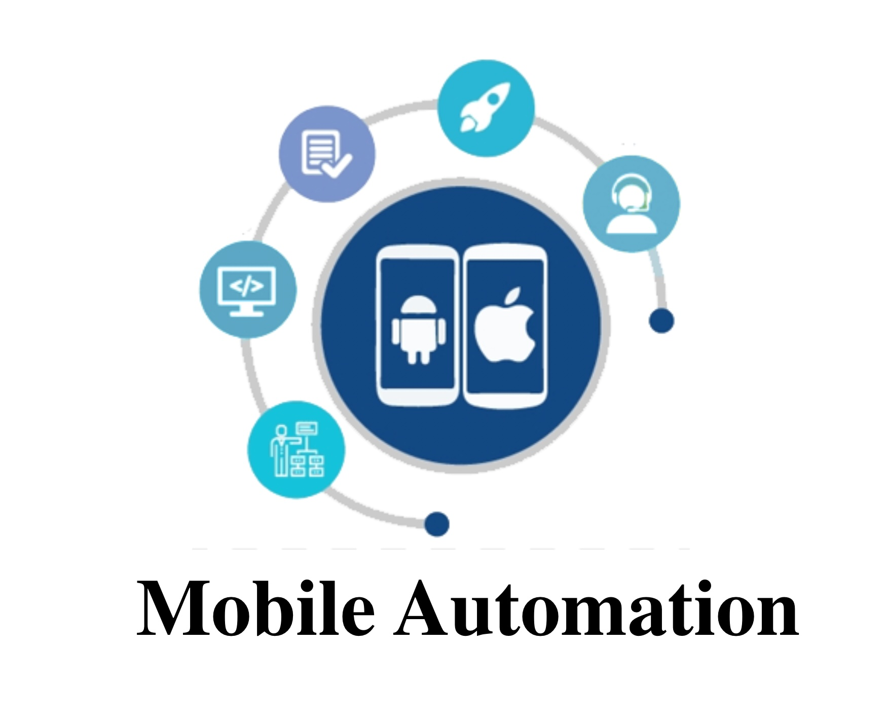

1. Introduction to Mobile App Automation
- Overview of mobile app automation
- Importance of automation in mobile app testing
2. Setting Up Your Test Environment
- Installing necessary software (Appium, Android Studio, Xcode)
- Configuring emulators and simulators
3. Introduction to Appium
- Understanding the Appium framework
- Basic architecture and components
4. Writing Your First Appium Test Script
- Creating a simple test case
- Running a test on a sample mobile app
5. Locators and UI Elements
- Identifying and interacting with UI elements
- Using different locators (ID, XPath, etc.)
6. Handling Different Mobile Platforms
- Android and iOS automation basics
- Platform-specific considerations
7. Advanced Interaction
- Gestures (swipes, taps, pinches)
- Handling native alerts and dialogs
8. Page Object Model (POM)
- Introduction to the Page Object Model pattern
- Structuring your automation code
9. Data-Driven Testing
- Parameterizing tests with external data
- Data-driven testing techniques
10. Test Suites and Test Execution
- Grouping tests into suites
- Running tests in parallel
11. Integration with Test Frameworks
- Integrating Appium with testing frameworks (e.g., TestNG, JUnit)
- Test setup and teardown methods
12. Handling Synchronization and Waits
- Dealing with asynchronous behavior
- Using explicit and implicit waits
13. Logging and Reporting
- Implementing logging in your automation script
- Generating test reports
14. Continuous Integration (CI) with Appium
- Integrating Appium tests into CI/CD pipelines
- Running tests automatically on each build
15. Mobile App Performance Testing
- Introduction to mobile app performance testing
- Measuring app response time and resource consumption
16. Cross-Browser Testing
- Testing your app on different mobile browsers
- Handling browser-specific issues
17. Appium Best Practices
- Code organization and maintainability
- Common pitfalls and how to avoid them
18. Appium with Real Devices
- Connecting real devices for testing
- Device-specific configurations
19. Appium and Cloud Testing
- Testing on cloud platforms (e.g., Sauce Labs, BrowserStack)
- Setting up and running tests in the cloud
20. Troubleshooting and Debugging
- Debugging Appium scripts
- Handling common issues in mobile automation